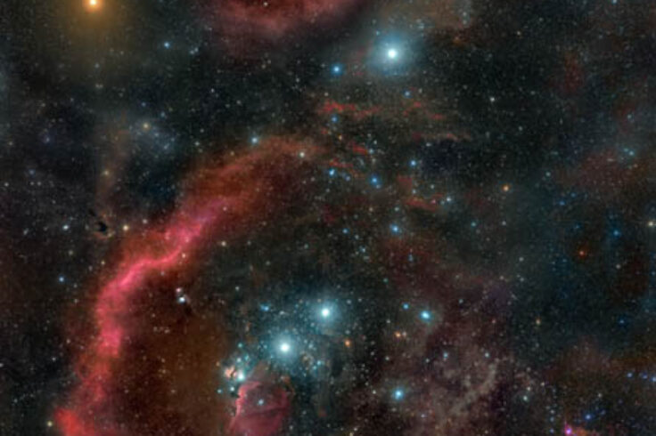
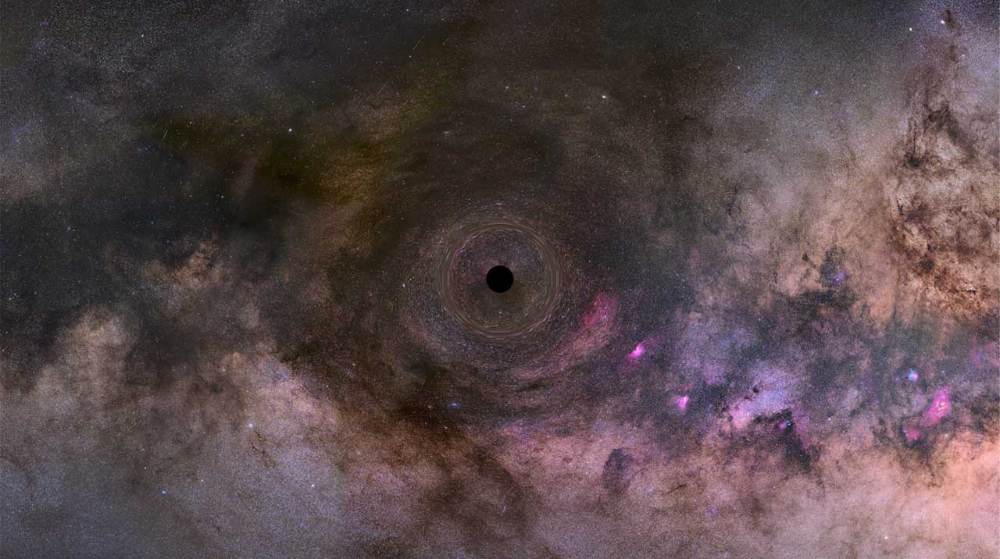

SUPERNOVAE SWEPT OUT BARNARD'S LOOP IN ORION
BY: DIANA HANNIKAINEN
JUNE 23, 2022


HAVE WE FOUND THE FIRST ROGUE BLACK HOLE IN THE MILKY WAY?
BY: COLIN STUART
JUNE 15, 2022

HUNDREDS OF THOUSANDS OF STARS REVEAL THE MILKY WAY’S “TEENAGE” YEARS
BY: GOVERT SCHILLING
MARCH 23, 2022